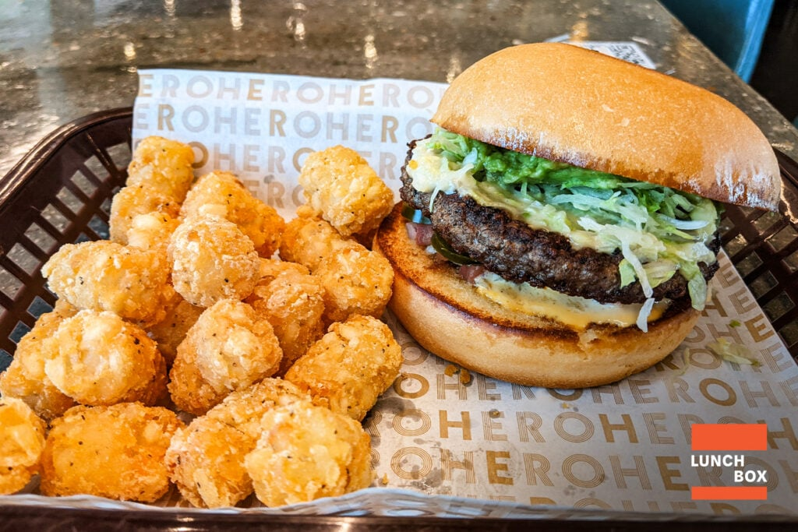
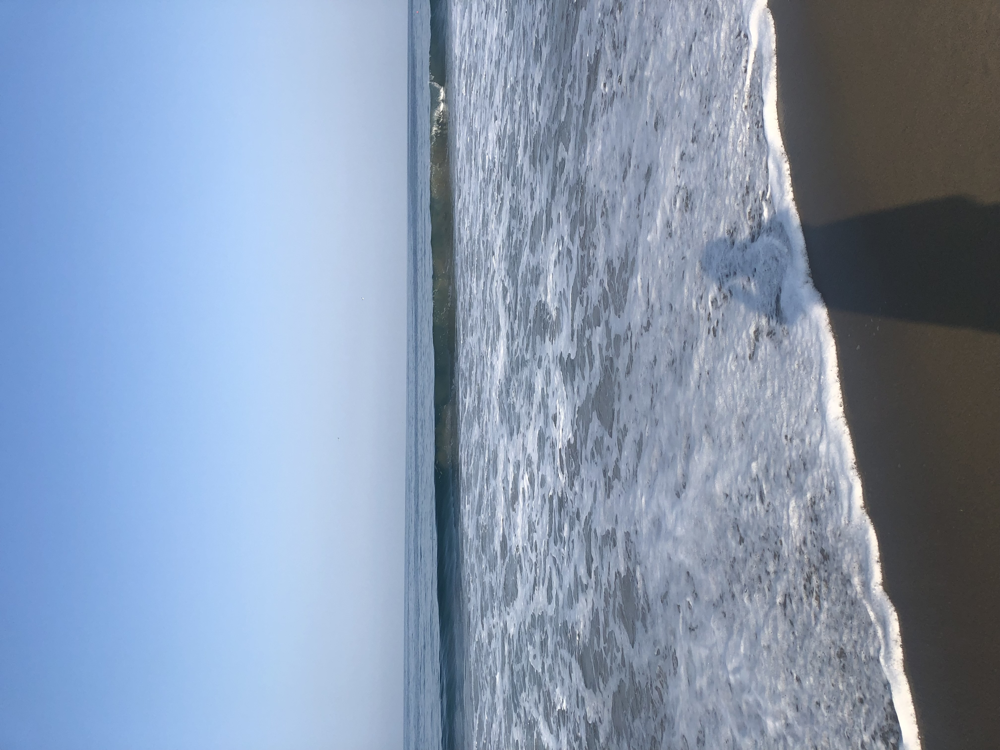
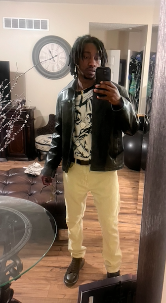

Exercise
Exercise has always been a fundamental part of my life. I started playing sports at the age of 4 and lifting weights in elemantary school. I wasn't allowed to lift weights, but after always watching my dad exercise, it was so interesting to me. I continued with my passion of exercise and playing sports throughout middle school and high school. I was then recruited to play football for Truman State University. At Truman, I obtained a degree in Exrcise Science where I learned the science behind being healthy. Following graduation, I started a personal training business named No Limit Training.
Food
To get the best results from exercise, you must have the proper nutrition. My knowledge from my degree is what got me into eating healthier foods and having a balanced diet. In my opinion to be balanced, you must eat good foods and sometimes bad foods lol. My favorite healthy meal is fish, veggies, and rice. My favorite cheat meal is a burger and fries.
☼ Traveling ☼
I love traveling because of the new experiences and various cultures that can be introduced. My parents started me off early and young travling in my first year of life to Disney World. Since then, I traveled to various states with them and even took some trips out of the country. I believe my favorite trip out of the country was Paris, France. The architecture, clothing, food, artwork, and coolness of the people intrigued me. Unfortunately, I had a gnarly nose bleed for most of my vist. Inside the US, I believe my favorite place is Los Angelos. The creativity buzzing around that city is endless.
Fashion
I have always had a knack for fashion. My parents are pretty stylish so I was always fly when my parents dressed me for my first years of life. I still remember when my parents allowed me to wear what I wanted. My first outfit was a red long sleeve shirt and blue jean shorts. My parents weren't having it and told me to change. Nonetheless, I still loved the idea of being able to wear whatever I wanted. In middle school, I got into the Hollister beach boy look and then in high school I had a multitude of styles in which I was named best dressed. I still wear an assortment of styles depending on how I feel. One of my dream businesses is to have a fashion line.
Art

I was introduced to art by mother who obtained her Master's degree in fine arts. I grew up painting and coloring with her. It was a time where we could both express however we felt. Learning to pay attention to color and how color illicits emotion has been a great tool for my life. After I came home from college, we would paint in our garage every week.